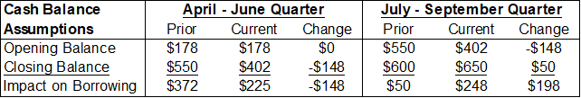

WASHINGTON -- The U.S. Department of the Treasury today announced its current estimates of privately-held net marketable borrowing[1]for the July – September 2023 and October – December 2023 quarters.
- During the July – September 2023 quarter, Treasury expects to borrow $1.007 trillion in privately-held net marketable debt, assuming an end-of-September cash balance of $650 billion.[2] The borrowing estimate is $274 billion higher than announced in May 2023, primarily due to the lower beginning-of-quarter cash balance ($148 billion) and higher end-of-quarter cash balance ($50 billion), as well as projections of lower receipts and higher outlays ($83 billion).[3]
- During the October – December 2023 quarter, Treasury expects to borrow $852 billion in privately-held net marketable debt, assuming an end-of-December cash balance of $750 billion.[4]
During the April – June 2023 quarter, Treasury borrowed $657 billion in privately-held net marketable debt and ended the quarter with a cash balance of $402 billion. In May 2023, Treasury estimated borrowing of $726 billion and assumed an end-of-June cash balance of $550 billion. The $70 billion decrease in privately-held net market borrowing resulted primarily from the lower end-of-quarter cash balance ($148 billion), somewhat offset by lower receipts and higher outlays.
Additional financing details relating to Treasury’s Quarterly Refunding will be released at 8:30 a.m. on Wednesday, August 2, 2023.
[1] Privately-held net marketable borrowing excludes rollovers (auction “add-ons”) of Treasury securities held in the Federal Reserve System Open Market Account (SOMA) but includes financing required due to SOMA redemptions. Secondary market purchases of Treasury securities by SOMA do not directly change net privately-held marketable borrowing but, all else equal, when the securities mature and assuming the Federal Reserve does not redeem any maturing securities, would increase the amount of cash raised for a given privately-held auction size by increasing the SOMA “add-on” amount.

[3] $22 billion of SOMA Treasury holdings dated September 30, 2023, are projected to be redeemed on October 2, 2023. These redemptions are expected to be considered by the Federal Reserve as part of the September redemption cap, but are not reflected in the $1.007 trillion in expected borrowing above, as the redemptions will settle in October.
[4] $32 billion of SOMA Treasury holdings dated December 31, 2023, are projected to be redeemed on January 2, 2024. These redemptions are expected to be considered by the Federal Reserve as part of the December redemption cap, but are not reflected in the $852 billion in expected borrowing above, as the redemptions will settle in January.